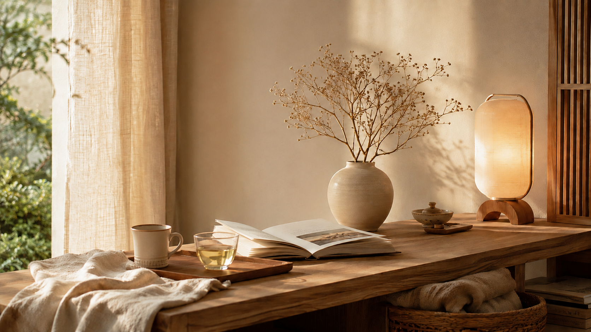
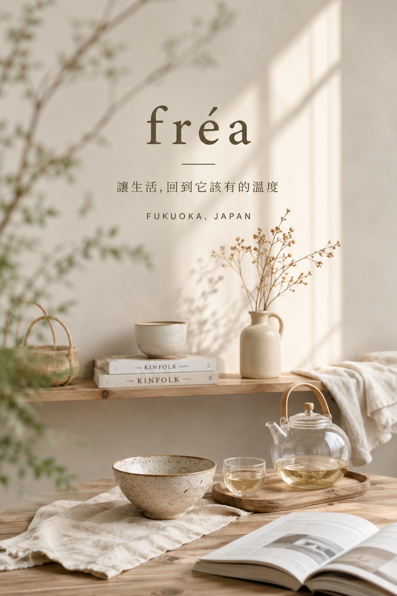
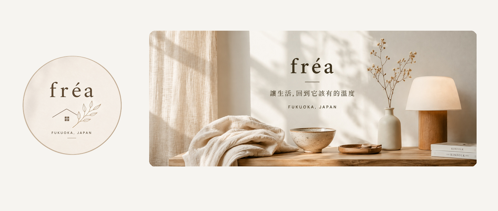

真正好用
不只是好看，也要真的順手。是否耐用、容易整理，能不能真正解決生活裡的小麻煩。

fréa，源自古英語，意為「主人」。
我們喜歡這個詞，不是因為「主人」代表擁有，而是因為它讓我們想到一種對生活的照料——知道什麼該留下、什麼值得被好好使用，也願意替日常把關那些看似微小的細節。
一只每天使用的碗、一條洗過很多次依然舒服的毛巾、一把順手的料理工具，或是一杯早晨的咖啡。真正陪伴生活的，往往不是最華麗的東西，而是那些安靜存在、被一再使用，最後成為日常一部分的物件。
這也是 fréa 的開始。

fréa 誕生於日本福岡。
福岡對我們而言，不只是品牌所在地，也是我們實際生活、觀察與挑選商品的地方。
這座城市有著屬於自己的節奏。它有城市生活的便利，也保留著與食物、器物、季節和土地之間很自然的距離。從一間咖啡店、一家老舖，到日常超市裡的一包高湯，我們經常在生活中遇見一些並不張揚，卻讓人想再次使用的東西。
因此，fréa 的選品不是從一張商品目錄開始，而是從生活開始。
從福岡出發，我們希望把這些在日本日常中真正被使用、被珍惜，也值得被帶回家的物件，分享給更多人。
「家」不是一個地方，
而是一種被用心對待的狀態。
家的溫度，不一定來自昂貴的家具，也不需要刻意營造。
它可能只是早晨替自己沖的一杯咖啡，晚餐時盛飯的一只碗，洗完澡後柔軟乾爽的毛巾，或是一件讓料理變得更順手的小工具。
當這些看似普通的事情，被好好對待，生活就會慢慢產生不同的質感。
fréa 想做的，不是告訴你「應該過什麼樣的生活」，而是提供一些好的選擇，讓每個人都能用自己的方式，把日常過得舒服一點、從容一點。
我們不以「商品很多」作為目標。比起快速增加品項，我們更在意一件商品是否真的值得進入日常。
不只是好看，也要真的順手。是否耐用、容易整理，能不能真正解決生活裡的小麻煩。
我們喜歡不容易看膩，也不需要追逐流行的設計。使用多年，依然能自然地留在生活裡。
可能是材質、製作方式、職人的思考，也可能只是品牌對某一件日常小事的堅持。
不一定是巨大的改變。讓做飯容易一點、喝咖啡愉快一點、整理家務省力一點，就已經足夠。
品牌大小不是我們唯一的標準。是否值得被帶進生活，才是。

我們希望 fréa 不只是一個購物網站，而是一個可以慢慢逛、慢慢認識日本生活，也慢慢找到適合自己物件的地方。
從福岡的一包高湯、一袋咖啡豆，到一只杯子、一件廚房工具、一件安靜待在家中的生活用品。每一件物品都不需要成為主角。
只要它在你每天使用的某個瞬間，讓事情變得順手一點，讓心情舒服一點，讓一頓飯、一杯茶、一個平凡的晚上，多了一點值得喜歡的理由。